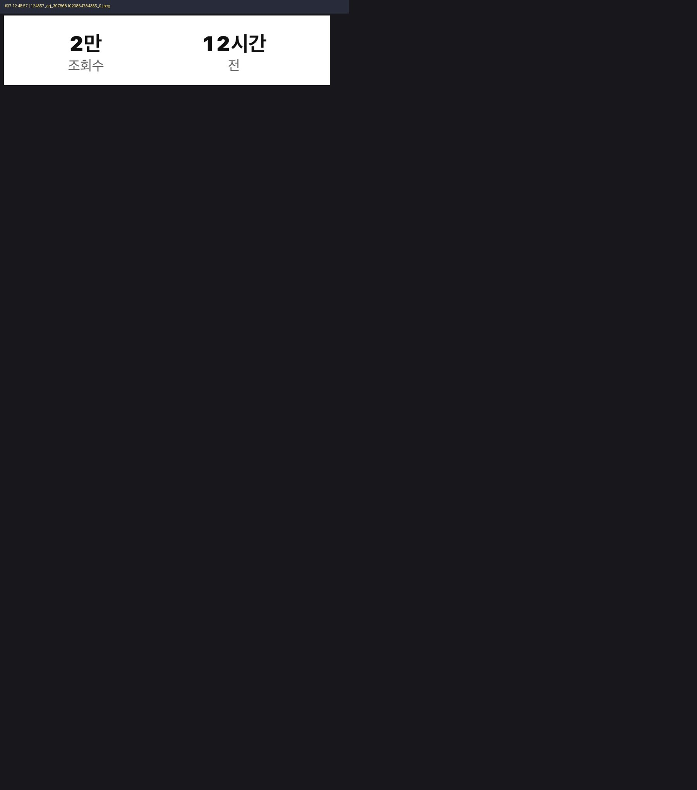

AI스위칭쇼츠 2기 프리미엄방 · 13:00 리포트 (2026-11-21 13:00)
2026-11-21 오르제이 완전 카피 브리프
오르제이 방식의 핵심은 소재가 먼저 터지는 것을 찾아 같은 소재를 여러 채널에 빠르게 재배포해 수창시간을 채우는 것이다. 다만 '1000만회'와 '3000만원' 같은 수치는 이번 로컬 OCR로 확인되지 않았다.
1,820방 전체 메시지
229오르제이 발언
7오르제이 캡처
0삭제 전 포착
1. 오늘 당장 업데이트 · 적용해야 할 것 TOP
2. 오르제이님 실행 방식 완전 카피 플랜
롱폼·쇼츠 공통 소재 발굴
오르제이 실행: 조회수 급등 영상을 찾고, 같은 소재 흐름을 2~3개 변형으로 발사. 수창 환산은 1만=4개, 5천=8개, 2만=2개, 4만=1개(10분 롱폼은 6만)
채널 운영·재사용 규칙
오르제이 실행: 수창한 영상은 다른 채널에서 재사용하지 않고 새로 만들기. 카테고리 변경은 14일 배너·프로필 변경 시점에 맞춤
썸네일
오르제이 실행: 썸네일 제조기 자료 활용, 폰트 가독성 우선
AI 작업 루틴
오르제이 실행: 소재 찾기에 AI 대부분 사용, 업그레이드 1시간. 해결은 본인 AI로 진행
3. 삭제 전 포착된 메시지 · 캡처 (0건)
- 오늘 삭제 포착된 핵심 메시지 없음
4. 오르제이님 이미지 · 캡처 전수 판독 (7장)
10:22:16
102216_orj_3978607186026903553_0.jpeg조회수 9.8천회, 9시간 전, 325(표시값 불명확)
11:32:50
113250_orj_3978642705506400257_0.jpeg조회수 7.1만, 11월 19일 업로드(2026년)
11:33:11
113311_orj_3978642882690578433_0.jpeg조회수 7만, 11월 16일 업로드(2026년)
11:33:44
113344_orj_3978643156830287873_0.jpeg좋아요 395, 조회수 1.5만, 11시간 전
11:44:28
114428_orj_3978648561548419073_0.jpeg조회수 119.2만, 평소 대비 117.4만회 높음, 그래프 최대치 120.0만, 28시간 기준 급등 곡선
11:44:28
114428_orj_3978648561548419073_1.jpeg조회수 3,271,895, 그래프 18.9만·12.6만·6.3만(48시간 전 → 지금)
12:48:57
124857_orj_3978681020864784385_0.jpeg조회수 2만, 12시간 전


5. 방 전체 주요 인사이트 · 도구/파일/링크
- ★ORJ(오르제이)
카톡 본문 11:21~12:17, 11:06 인스타 링크
소재 우선, 퀄리티 다음. 같은 소재 여러 채널 전개, 수창 환산표 제시. 스카프 소재로 수창 5개 달성했다고 발언. '1000만회 숏폼 1개'는 OCR 캡처에서 확인되지 않음(확인된 최고치 약 119만) - ★ORJ(오르제이)
카톡 본문 11:48~12:08
AI 활용 원칙: 인간에게 묻기보다 AI로 해결, 소재 탐색에 AI를 하루 23시간 돌리고 1시간 업그레이드. 체크 기준은 조회수 - 킷켓 링크 열기 ↗
텔레그라ph 링크 공유(내용 미확인, 열지 않음). 제목은 '최신 주소'로 되어 있어 외부 주소 목록일 가능성이 있다 - ★ORJ(오르제이) 링크 열기 ↗
인스타그램 게시물 공유(본문 내용은 카톡 외 확인 불가) - 하루하나 링크 열기 ↗
크롬 웹스토어 확장 공유(DragFree mouse unblock). 설치 전 권한 검토 필요
6. 오르제이님 2026-11-21 대화 전수 맥락 아카이브 (누락 0건)
전체 24개 맥락 블록 · 오르제이 229건 원문 펼치기
=== BLOCK 1 (08:39:53~09:03:50) === [08:39:53] 이@희(나링): 큰일이다..ㅠ [08:41:11] 차@정(꽃슈니): 잘다녀오세요 ★ [08:46:01] 이@나(오르제이): 좋은 아팀입니다 ★ [08:46:04] 이@나(오르제이): 침 [08:46:34] 김@희(빅파이): 아직 많이 안오셨어요~ ★ [08:46:55] 이@나(오르제이): 공유 하나 드릴게요~~~~~~ ★ [08:47:17] 이@나(오르제이): 아 원하시면 드릴게요~~~ ★ [08:48:01] 이@나(오르제이): 발사포 원인 ★ [08:48:16] 이@나(오르제이): 충격적인 결과 [08:48:55] 신@원(딱지맘): 당근 원하쥬~~ ㅎㅎ [08:48:58] 이@영(와칸다씨): 궁금! [08:49:12] 신@원(딱지맘): [type=20] ★ [08:49:28] 이@나(오르제이): 진짜 놀랬어요 [08:49:36] 박@석(유튭킹): 궁금 ㅎㅎ ★ [08:49:45] 이@나(오르제이): 카테고리와 결도 깨부시는게 소재 이슈였는데요 [08:49:55] 박@석(유튭킹): 와 ★ [08:49:56] 이@나(오르제이): 남대문 스카프 사장님 아시죠? [08:50:00] 박@석(유튭킹): 냅 [08:50:01] 신@원(딱지맘): 네 [08:50:01] 이@영(와칸다씨): 네 ★ [08:50:09] 이@나(오르제이): 이걸로 수창시간 5개 채웠습니다 [08:50:14] 박@석(유튭킹): 와 ㄷㄷㄷ [08:50:15] 신@원(딱지맘): 헉 [08:50:16] 이@영(와칸다씨): 스카프리오 ★ [08:50:19] 이@나(오르제이): 넵 [08:50:22] 박@석(유튭킹): 역시 소재가 깡패 [08:50:26] 이@영(와칸다씨): 대박 ㅋ ★ [08:50:32] 이@나(오르제이): 지금 약빨이 떨어진거 같은데 [08:50:36] 신@원(딱지맘): [type=20] ★ [08:50:37] 이@나(오르제이): 아직 희망이 있어요 [08:50:39] 이@영(와칸다씨): 미리축하드립니다 [08:50:42] 방@숙(필드야): 옆 사람과 친해지려면 노트북 가져가야하나요? ★ [08:50:52] 이@나(오르제이): 목도리 사장님으로 변신중 [08:51:10] 박@석(유튭킹): 목도리??? 키워드 변형인가요? ㅋㅋ ★ [08:51:15] 이@나(오르제이): 이번에 한가지 느낀것 정리 해드리면요 [08:51:15] 신@원(딱지맘): 저는 걍 폰만 가져가요 ㅎㅎ [08:51:19] 이@영(와칸다씨): 좀더 있으면 목도리 도마뱀 되시려나 [08:51:25] 방@숙(필드야): 필기도구만 가져가몃 안되나요? ★ [08:51:43] 이@나(오르제이): 제가 자랑하려고 조회수 찍어서 올리는게 아니라 [08:51:45] 신@원(딱지맘): 그래도 된다고들 하셧어요 ★ [08:51:55] 이@나(오르제이): 진짜 안된다 생각 마시고 ★ [08:52:20] 이@나(오르제이): 되는걸 찾으면 그때 확 뽑으시라고 6일간 보여드린거고요 [08:52:38] 방@숙(필드야): 스카프로 하신거에요? ★ [08:54:16] 이@나(오르제이): 바디캠 - 수창시간 임박 1개, 3주까지 2개 / / 스카프 -5개 / / 숏폼 - 1000만회 -1개 / / 다른 소재 - 1개 / / 뚫고 있는 - 2개 넉넉히 2~4주 ★ [08:54:50] 이@나(오르제이): 한달동안 수창시간만 채우는게 11개 까지도 / / 가능합니다 [08:54:51] 신@원(딱지맘): [type=20] ★ [08:54:56] 이@나(오르제이): 이제 구독자 채울게요 [08:56:31] 박@석(유튭킹): 와우 축하드려용 ^^ [08:56:32] 박@석(유튭킹): 🎉😊🎈 ★ [08:56:36] 이@나(오르제이): 꼭 도움되시길 바랍니다. / / 열정적으로 긍정적인 시선으로 나도 해보자 라고 생각해보시면 / / 그 때는 나도 할 수있는 것 같습니다 . / / 쇼츠 대폭발에서 전부 배운 것이니 / / 고된 수창시간 채우는 전략을 다음길 바라겠습니다.~~~^^ ★ [08:57:01] 이@나(오르제이): 이거 전해드릴려고 , 한 주 좀 더 까불 었습니다. [08:57:15] 박@석(유튭킹): 더 많이 활동해주세용 ㅎㅎㅎ [08:57:30] 박@석(유튭킹): 애너지 열정의 나눔이 엄청납니다.^^ ★ [08:58:30] 이@나(오르제이): 결다르면 안나오는 것도 물론 있습니다. 근데 나오는것도 있습니다 . / / 시도를 해봤는가? 뚫어 보려고 했는가? / / 결과는 내가 아무것도 하지 않으면 부럽기만 한것이고 , / / 움직이면 뭐든 작은 ~ 큰성과 무조건 나옵니다 . [08:58:35] 구@형(예랑빠): 에고 맨날 벽타다가 봐서 늦네요 ㅎㅎㅎㅎㅎㅎ / 27일 너무 기대됩니다! [08:58:39] 신@원(딱지맘): 늘 나눔해주시니 넘 감사해용~~ ★ [08:59:20] 이@나(오르제이): 초보라고 기죽지 마시고, 집중 하셔서 / / 남이 잘되면 왜 잘될까 들여다 보시고. / / 나에게 대입해서만드시길 바라겠습니다. ★ [08:59:34] 이@나(오르제이): 진찌 그래야 나에게 변화가 오실거에요 ★ [09:00:38] 이@나(오르제이): 내가 지금 별로 변화가 없다? / / 그럼 변화를 주세요~ 도전과 시도를 해보세요 / / 쇼츠대폭발 대장님과 조교님들께서 / / 전체 카테고리 전부 다 보여주셨어요 . ★ [09:02:04] 이@나(오르제이): 저는 살다 살다 수업하나강의 해서 전체를 다배우는 일이 있을 수 있다는 걸 느낍니다. / / 정말 대단한 실전 초특급 강의 입니다 . 얼른 흡수하고 내것으로 만드십쇼 / / ^^ / / 쇼츠대폭발 2기 화이팅 [09:03:50] 이@희(나링): @김@희(빅파이) === BLOCK 2 (09:05:45~09:07:19) === [09:05:45] 김@희(빅파이): ㅋㅋㅋㅋ [09:05:48] 이@희(나링): 2번째 줄이요? ★ [09:05:52] 이@나(오르제이): 스카프로만 5개 수창시간 채었어요 ★ [09:05:56] 이@나(오르제이): 웠 [09:07:19] 이@희(나링): 핵감동...애기랑 올까봐 === BLOCK 3 (09:09:23~09:10:17) === [09:09:23] 박@석(유튭킹): [답장: 스카프로만 5개 수창시간 채었어요] 이것도 v2~vn 전략 쓰신거죠?? ㅎ / (여러 채널에..전개) [09:09:35] 김@희(빅파이): 무겁게 올라오시느라 힘드셨겠어요 ㅠ 내려가서 기다릴껄 ㅠㅠㅠ ★ [09:09:36] 이@나(오르제이): [답장: 이것도 v2~vn 전략 쓰신거죠?? ㅎ / (여러 채널에..전개)] 넵 ^^. ★ [09:09:54] 이@나(오르제이): 오늘 대전 교육이니까 성심당 테스트 해볼게요 [09:10:17] [삭제됨] 정@정(하루하나): 어제 올제이님 꺼 하나도 못봤네요 벽타기하고 와야지~ === BLOCK 4 (09:10:18~09:10:48) === [09:10:18] 박@석(유튭킹): 와 정말 실천으로 착착 보여주시는~^^ [09:10:30] 박@석(유튭킹): 저도 따라가겠습니다. ㅎ ★ [09:10:34] 이@나(오르제이): 어젠 내용 없을 거에요~^^. [09:10:48] 이@희(나링): 빅파이님 혹시 옆으로 오실거문 오셔두대영 테이블 잘보이게 땡김요 캬캬 === BLOCK 5 (09:12:24~09:34:38) === [09:12:24] 김@진(월억마마): 오전반 동일 이슈로 늦으시는 분들 오후반으로 옮겨주신것 같아요 [09:13:31] 박@경(완숙): 전 대전역 다왔는데 대기 중.. / 아 다시 기차 움직이네요. 이따 뵈요 ㅎ ★ [09:15:27] 이@나(오르제이): 어제 처음 구독자 만명 넘었습니다 [09:15:52] 정@정(하루하나): 오 축하드려요~ ★ [09:16:36] 이@나(오르제이): 이제 롱폼 구독자 만명 채워서 / / 수창 10개 , 12월 까지 추가 수창 10개 / / 2개월에 20개가 가능할 수 있는지 도전 해볼게요~^^ ★ [09:17:59] 이@나(오르제이): 현재 11개 구독자만 채우면 됨 / / 오프라인강의 까지 듣고 , 화요일 부터 벌어진 일입니다 / / 5일 만에 ★ [09:18:48] 이@나(오르제이): 고도의 몰입과 집중이면 되십니다.^^진짜로 [09:19:20] 정@정(하루하나): 크 저도 어제 쇼폭님 기받고 왔으니까 달려볼께요 ㅎㅎ ★ [09:19:52] 이@나(오르제이): 무조건 더 잘되실거에요^^ [09:20:18] 정@정(하루하나): [답장: 무조건 더 잘되실거에요^^] (이모티콘) ★ [09:23:30] 이@나(오르제이): 지금 유튜브 에서 최신 흐름과 배우고 , 생각 하고 깨달은 현재까지 / / 거의 95%이상 전부공유 드렸습니다.~^^ ★ [09:26:53] 이@나(오르제이): 별거 아닌거 같지만 저에게 위기가 올 수 있는 내용까지싹다 드렸고, 한단계 더 뛰어넘어 볼게요^^ [09:27:00] 박@석(유튭킹): 우와 이제 실버버튼으로 쭉쭉 가셔야죠 ㅎ [09:27:26] 조@원(눕방사업가): 난 왜 10% 밖에 못알아 듣는거ㅈㅣ.. ㅋ ★ [09:28:08] 이@나(오르제이): ㅎㅎㅎㅎㅎㅎㅎㅎㅎ ★ [09:28:26] 이@나(오르제이): 다음주면 흡수되시나 봅니다 [09:28:51] 박@련(튜튜): 오르제이님 항상 너무 감사합니다. 매일 열심히 메모하고 따라해보고 있는데 아직 희망이 보이는 채널이 없지만 동기부여 받고 오늘도 힘내봅니다. ★ [09:30:00] 이@나(오르제이): 무조건 되시니 쇼츠대폭발 믿고 , 포기하지마십쇼 한끗 차이인데 그 한끗이 아직 덜 느껴지신거 뿐이에요 [09:30:26] 강@철(왕경태): 저도 포기하지않고 화이팅!! [09:31:00] 강@철(왕경태): 오르제이폭발^^ ★ [09:31:12] 이@나(오르제이): 정말 잘하고 대단 하신 분들 많으나 그분들은 일부 ^^ / / 대부분 한끗 차이 입니다 ★ [09:31:39] 이@나(오르제이): 그러니 누군가 의시대고 막상 까보면 별반 차이 안납니다. ★ [09:31:50] 이@나(오르제이): 그리고 우리 무기가 더쎕니다.^^ ★ [09:32:05] 이@나(오르제이): 일주일이면 잡는 구조니 집증 해보세요 ★ [09:32:26] 이@나(오르제이): 집중 ★ [09:33:15] 이@나(오르제이): 그리고 일주일이면뒤집는 반전이 나올 수 있으니 기죽지 마세요 제발 ㅠㅜ [09:33:25] 이@화 (uglydoc): 카페 프리미엄반에 오르제이님께서 프롬프트 올려주셨는데, 복사가 안되서 여쭤봅니다... / 카페에 제공해주신 프롬프트를 복사해서 vs코드에 붙여넣을려고 하는데, 어떻게 해야 복사 붙여넣기 할 수 있을까요? / 아시는 분들 좀 답변 부탁드립니다. [09:33:56] 이@화 (uglydoc): 카페에 올려진 글이라서 복사 붙여넣기가 안되는것 같아요 / 정말 컴맹이라서 도움 요청 드립니다 ㅜ.ㅜ ★ [09:34:10] 이@나(오르제이): 이모든 걸 이겨내고 뚫고 나가셔야 해요 / / 이방에서 느껴지는 압박감 마저 이겨내시는 멘탈이 필 수 입니다.^^ [09:34:38] 정@정(하루하나): 이게 확장프로그램있었는데 === BLOCK 6 (09:34:55~09:35:37) === [09:34:55] 유@선(어른아이): 구글이미지 번역에 넣고 [09:34:59] 유@선(어른아이): 텍스트 복사 해오면되여 ★ [09:35:23] 이@나(오르제이): agy에. 카페 내용 전체 긁어서 싹다 적용시켜 라고 하세요 / / 전체 내용 나에게 도움되는 필요한거 [09:35:37] 강@철(왕경태): 집중!!오르제이님의 긍정 에너지 응원 너무나 감사합니다.^^ === BLOCK 7 (10:15:53~10:25:04) === [10:15:53] 윤@성(따라가자): [사진 (101553_mem_3978603980730693633_0.png)] [10:16:01] 윤@성(따라가자): 그래도 0보다는 낫네여 ㅡㅡㅋ ★ [10:22:16] 이@나(오르제이): [사진 (102216_orj_3978607186026903553_0.jpeg)] ★ [10:22:25] 이@나(오르제이): 역사에다가 다른 카테고리 올려도 나옵니다 ★ [10:22:36] 이@나(오르제이): 이렇게 따라하시라는게 아니라 [10:22:43] 이@지(올리이브): 다시 뽑 ★ [10:22:44] 이@나(오르제이): 본질을 깨우치셔야 힙니다 ★ [10:22:51] 이@나(오르제이): 틀을 깨십쇼 [10:22:53] 방@숙(필드야): 이 프로그램은 어디서 구할 수 있나요? ★ [10:23:57] 이@나(오르제이): 내가 경험해보지도 않고 , 100%라 믿는 그 고정관념 의 틀 을 깨십쇼 [10:25:04] 박@석(유튭킹): 오 다른나라에도 수출하시는군요? ㅎ === BLOCK 8 (10:41:42~10:42:43) === [10:41:42] 우@은(디지털회사원): 반영까지 6일 정도만 기다리면 되겠는데요 [10:41:53] 박@석(유튭킹): 우와 디회님도 깨달음을 얻으신겁니꽈? / 축하드려요~^^ ★ [10:42:13] 이@나(오르제이): 축하드립니다 [10:42:24] 우@은(디지털회사원): 이건 단순 수창용이긴 한데 뭔가 알거같기도 하고 그러네요 [10:42:33] 차@정(꽃슈니): 디회님 구독자는 어떻게 하시는거에요? ★ [10:42:36] 이@나(오르제이): 한국과 해외권 = 또 중요한걸 발견했는데 10일간 테스트 해볼게요 [10:42:43] 차@정(꽃슈니): 저 수창 하나 억까당해서.. === BLOCK 9 (10:55:39~11:13:22) === [10:55:39] 우@은(디지털회사원): 전 가져갔는데 안가져오신 분들이 좀 더 많았어요. 그냥 필기하셔도 되고 [10:56:44] 우@은(디지털회사원): 전 노트북으로 메모도 하고 유튜브 레퍼런스 채널들 언급해주시는거 바로바로 구독하고 레퍼런스로 등록해놓고 했어요 ★ [11:06:25] 이@나(오르제이): https://www.instagram.com/p/Df6jHryCasd/?img_index=2&evlk=MWs4eTF2eHRseHBuag== [11:13:22] 황@영(힁로그): 으잉ㅜㅜ 방수님 어디아프신거에요 === BLOCK 10 (11:14:41~11:15:10) === [11:14:41] 유@선(어른아이): 올제이님 몇시간 주무세여? [11:14:45] 유@선(어른아이): 철인이신가 ㄷㄷ ★ [11:14:46] 이@나(오르제이): ㅋㅋㅋㅋ [11:14:49] 설*희(불루): 3시간? ★ [11:14:54] 이@나(오르제이): 저 체력이 좋아요 [11:14:58] 설*희(불루): 4~7시 주무시는듯 [11:14:59] 유@선(어른아이): 저도 지금 3시간인가 자고온거 같은데 ★ [11:15:02] 이@나(오르제이): 3시간 ~4시간 잡니다 [11:15:10] 유@선(어른아이): 와 체력 좋으시다 === BLOCK 11 (11:15:18~11:15:58) === [11:15:18] 설*희(불루): 올줴님 [11:15:19] 유@선(어른아이): 저는 이렇게 2틀만하면 하루종일 헤롱헤롱인데 ★ [11:15:26] 이@나(오르제이): 20대땐 40분만 자면 풀컨디션 왔는데 ★ [11:15:34] 이@나(오르제이): 이젠 나이가 들어서 ㅋㅋㅋ [11:15:58] 우@은(디지털회사원): 어제 오후? === BLOCK 12 (11:16:14~11:16:59) === [11:16:14] 김@웅(fixit): 조금만 하다보면 새벽 4시 ~6시 [11:16:49] 설*희(불루): ㅎㅎ 어제 끝나고 / 제 양쪽에 앉아계셨던 두리두밥님이랑 써니님이랑 폭풍밥먹구 ★ [11:16:51] 이@나(오르제이): 체력만 좋아요 ㅋㅋㅋㅋㅋ [11:16:59] 설*희(불루): 정모때 꼭 뵈요! === BLOCK 13 (11:19:13~11:20:05) === [11:19:13] 방@숙(필드야): 산타페님? 아파요? [11:19:21] 김@웅(fixit): 바티캠도 하시나요? ★ [11:19:44] 이@나(오르제이): [답장: 어제 올줴님 글 오전에 벽타기완료요 ㅎㅎ / 바디캠1일 반응온거 / 이 벤치기준이 그전에 알려주신 그 기준인] 저는 다 비슷합니다 .~^^. 원리가 비슷하다는걸 깨달았어요 [11:19:45] 설*희(불루): 저 바디캠수창했어요 [11:19:53] 김@웅(fixit): 오르제이님 곧 3000만원 인증 하실듯 ★ [11:19:57] 이@나(오르제이): 잘하신다 [11:20:05] 김@웅(fixit): 우와 === BLOCK 14 (11:20:24~11:21:02) === [11:20:24] 김@경(열공만이살길): 대단하시다 [11:20:38] 설*희(불루): 아 근데 수창한채널에서 조회수나온걸 / 다시써먹길안하고 ★ [11:20:55] 이@나(오르제이): 오늘부터 하셔요 [11:21:02] 방@숙(필드야): 정말 고수들과 친하게 지내고 싶어요 === BLOCK 15 (11:21:10~11:23:26) === [11:21:10] 설*희(불루): 2개 채널 또 업로드중인데 다 새로만들기를 하고있으니까 작업효율이 [11:21:14] 설*희(불루): 이게아닌듯 ★ [11:21:16] 이@나(오르제이): 모두 친하게 지내요~ [11:21:18] 김@웅(fixit): 재야의 초보입니다 ★ [11:21:29] 이@나(오르제이): 초짜 입니다 ㅎㅎ [11:21:31] 황@영(힁로그): 맞아요ㅋㅋㅋㅋ 너무 재밌어가지구 시간 너무 잘갔어요 [11:21:40] 김@웅(fixit): 하드웨어 밖에 아는게 없어요 [11:21:42] 방@숙(필드야): 올려준 글도 여러번 읽어봐야 이해가 가는 1인 ★ [11:21:55] 이@나(오르제이): 링크를 붙여서 이틀에서 같은소재 2개 더 만들어 라고 ★ [11:22:18] 이@나(오르제이): 개연성 + 앞뒤내용 잘맞춰서 지감 처럼 터지게 [11:23:26] 설*희(불루): 와..그러면 1개 소재로 무조건 최소 채널3개는 테스트가는거죠!! 와우 === BLOCK 16 (11:24:36~11:26:34) === [11:24:36] 유@선(어른아이): 저라면 폰트부터 변경 [11:25:08] 배@기(클라운마루): 폰트 어떤점 말씀 부탁드려요~ ★ [11:25:11] 이@나(오르제이): 베네치아님 썸네일 자료 기가막히네요 [11:25:47] 유@선(어른아이): 좀더 가독성 좋은거로 바꿀거 같아여 [11:25:58] 배@기(클라운마루): 아하~ ★ [11:26:04] 이@나(오르제이): @설*희(불루) 터지신거 오늘 꼭꼭 하세요.~^^ ★ [11:26:18] 이@나(오르제이): 바디캠도 또터또 확인했어요 [11:26:34] 설*희(불루): 네 오늘은 고거부터할께요 / 왜 전부다 ~~ 새영상을 만들고 앉았었냐 === BLOCK 17 (11:28:16~11:32:52) === [11:28:16] 설*희(불루): [답장: 중드 하신거요?] 아뇨~ 중드는안해봤네요 [11:28:44] 설*희(불루): 네 !! 완전요!! 근데 이글거려도 새벽엔 잠이와요..ㅎㅎ ★ [11:28:53] 이@나(오르제이): 충분히 가능 합니다 ★ [11:29:00] 이@나(오르제이): 지금 그거 한분만 해버세요 [11:29:10] 설*희(불루): 터진거 또 터진다 ★ [11:29:13] 이@나(오르제이): 영상 조회수 100~1000천대 롱폼 ★ [11:29:17] 이@나(오르제이): 스캬프 사장님 [11:29:22] 설*희(불루): 네네 ★ [11:29:25] 이@나(오르제이): 버프 빠졌는데 ★ [11:29:33] 이@나(오르제이): 1만은 아직 갈 듯 해요 [11:29:42] 설*희(불루): 오호라 ★ [11:29:58] 이@나(오르제이): 연타 3일이면 2만이상은 갈거라고 봐요 ★ [11:30:45] 이@나(오르제이): 이걸로 7일동안 수창시간 5개 했으니 ★ [11:30:54] 이@나(오르제이): 이제 그만하고 넘겨 드립니다 ㅎㅎ ★ [11:31:07] 이@나(오르제이): 대신 한분만 [11:31:13] 안@숙(가네쑥공업): 근데 그 터진 영상 형식 그대로 변형만한거에여? ★ [11:31:14] 이@나(오르제이): 다하시면 갈라 먹으실 거에요 ★ [11:31:18] 이@나(오르제이): 네 ★ [11:31:25] 이@나(오르제이): 영상 제작 6분 ★ [11:31:39] 이@나(오르제이): 9개씩 로켓 발사 [11:31:48] [삭제됨] 안@숙(가네쑥공업): 터진영상= 내꺼가아님.. 도 해당인건지..ㅋㅋㅋ [11:31:57] 안@숙(가네쑥공업): 오늘 실험해볼라구; ★ [11:32:26] 이@나(오르제이): 이원리만 하시면 수창시간 까지는 개꿀 입니다 [11:32:26] 안@혜(베네치아): 굿모닝입니다 [11:32:39] 설*희(불루): 영상제작 6분 9개씩 로켓발사 ㅋㅋㅋ [11:32:49] 서@택(변갸님): 어제 떳다는 영상 ★ [11:32:50] 이@나(오르제이): [사진 (113250_orj_3978642705506400257_0.jpeg)] [11:32:52] 서@택(변갸님): [사진 (113252_mem_3978642725459490817_0.png)] === BLOCK 18 (11:33:00~11:33:17) === [11:33:00] 서@택(변갸님): 와우 [11:33:00] 설*희(불루): 베네치아님~~썸네일제조기 넘감사합니다♡♡ ★ [11:33:11] 이@나(오르제이): [사진 (113311_orj_3978642882690578433_0.jpeg)] [11:33:17] 설*희(불루): 와우 축하드려요! === BLOCK 19 (11:33:24~11:34:00) === [11:33:24] 서@택(변갸님): ㅎㄷㄷ.. [11:33:40] 설*희(불루): 와..모냐모냐모냐진짜 ★ [11:33:44] 이@나(오르제이): [사진 (113344_orj_3978643156830287873_0.jpeg)] ★ [11:33:47] 이@나(오르제이): 기죽지 마시고 ★ [11:33:56] 이@나(오르제이): 그대로 내것으로 민들어서 고고요 [11:34:00] 서@택(변갸님): 아 근데 지금 그게 중요한게 아니라 얼른 대전갈 방법 알아봐야겠네요 === BLOCK 20 (11:34:23~11:35:16) === [11:34:23] 장@원(제주탈출): [type=20] [11:34:23] 설*희(불루): 스위칭쇼츠2기 디하클 뿌셔버리죠!!!!! ★ [11:34:40] 이@나(오르제이): 디하클에 조만간 인증 할게요 [11:34:44] 설*희(불루): 줄줄이 비엔나 쏘시지로 수창시켜서 / 도배합시다 성과인증글 ★ [11:35:02] 이@나(오르제이): 12월쯤 수창 20~25개 만들었다고 ★ [11:35:12] 이@나(오르제이): 안될 수도 있는데 확률 90% [11:35:16] 설*희(불루): 크 멋지다 === BLOCK 21 (11:35:40~12:00:52) === [11:35:40] 안@혜(베네치아): 드디어 오늘이네요 [11:36:08] 안@혜(베네치아): 전 대전으로 가는길이에요! ★ [11:36:14] 이@나(오르제이): 200만 우리십쇼 / / 이걸로 잘하면 5~10개 나와요 ★ [11:38:14] 이@나(오르제이): 압박감을 이겨내고 내것으로 만들기 [11:40:42] 이@영(와칸다씨): 3시인데 벌써 출발하십니까? ★ [11:40:57] 이@나(오르제이): 먼저 치고 나가실 분들이 쫙 치고 나가셔야 다음분들이 바로 붙습니다 [11:41:52] 이@영(와칸다씨): 올제님 덕분에 오늘도 희망차게 시작해보겠습니다! [11:41:56] 박@석(유튭킹): 혹시 삭제된건가요?? ㄷㄷ ★ [11:41:57] 이@나(오르제이): 제꺼 찾아보시는 분들은 영상 퀄은 보지 마십쇼 ㅋㅋㅋ ★ [11:42:09] 이@나(오르제이): [답장: 혹시 삭제된건가요?? ㄷㄷ] 네? [11:42:20] 박@석(유튭킹): 메시지 삭제된거가 보여서 ㅋㅋㅋ [11:42:34] 박@석(유튭킹): 하도 뒷북을 많이 쳐서 놓쳤나 싶어서요 ㅋㅋ [11:43:14] 장@원(제주탈출): 저도 못봣어영 ★ [11:44:28] 이@나(오르제이): [사진 (114428_orj_3978648561548419073_0.jpeg, 114428_orj_3978648561548419073_1.jpeg)] ★ [11:44:47] 이@나(오르제이): 이런 조회수 더 많은 영상 전세계에 / / 천지빼깔이 입니다 . [11:44:57] 안@숙(가네쑥공업): ㅠㅠ 현기증나여 ㅋㅋ ★ [11:45:01] 이@나(오르제이): 아 난 안되지? 가 아니고 / / 빨리 찾아서 따라 올리자 [11:45:01] 장@원(제주탈출): [type=20] [11:45:05] 안@숙(가네쑥공업): 할일이 많은데 맘이 급해짐 ㅋㅋㅋ; ★ [11:45:15] 이@나(오르제이): 빨리 찾아서 테스트 해보자 ★ [11:45:20] 이@나(오르제이): 윰직이십쇼 ★ [11:45:25] 이@나(오르제이): 압박감 이겨내시고 ★ [11:45:29] 이@나(오르제이): 멘탈 잡으시고 ★ [11:45:36] 이@나(오르제이): 초보자도 됩니다 ★ [11:45:43] 이@나(오르제이): 벤치마킹 하세요 ★ [11:45:54] 이@나(오르제이): 그대로 내시스템으로 만들고 적용 ★ [11:46:01] 이@나(오르제이): 무조건 실행 하세요 ★ [11:46:12] 이@나(오르제이): 이게 될까? 해보고 판단 하세요 ★ [11:46:27] 이@나(오르제이): 걱정? 할 여유가 없여요 그냥 하세요 [11:46:28] 안@숙(가네쑥공업): 근데 카톡에서 오르제이님 말씀만 어케 복붙해서 다시정리해볼수 있으까유? ㅋㅋ ★ [11:46:34] 이@나(오르제이): 하세요 ★ [11:46:39] 이@나(오르제이): 뭐든 해보세요^^ [11:47:03] 방@숙(필드야): 썸너일 제조기 카페에 있나요? ★ [11:47:50] 이@나(오르제이): Agy 에 오르제이 닉네임 개구라 치는거 같으니까 싹다 긁어 와서 / / 분석하고 정리해 / / 그리고 내가 할 수 있는 좋은 것들은 적용시키게 뭘 어떻게내가 뭐부터 해야하눈지 정리해 [11:48:04] 안@숙(가네쑥공업): ㅋㅋㅋㅋㅋ ★ [11:48:14] 이@나(오르제이): Ai야 너는 한계가 없는아이고 / / 나 인간은 한계가 분명해 [11:48:16] 황@남(개별원가): 오르제이님 전부다 agy로 작업 하시는거죠?? ★ [11:48:25] 이@나(오르제이): 근데 왜 니가 인간처럼 행동해 ★ [11:48:53] 이@나(오르제이): 볼케이노 agy 둘다하다가 지금은 agy요 ★ [11:49:11] 이@나(오르제이): 노골적로 말씀 드릴게요 ★ [11:49:38] 이@나(오르제이): 니가 ai인데 인간 처럼 한계에 갇혀 있으면 / / 어떡하니? [11:49:52] 황@남(개별원가): 진짜 오르제이님 카톡 다 정독 해야겠어요 ㅠㅠ [11:50:06] 황@남(개별원가): 오르제이님 무조건 따라해봅니다 ㅋㅋㅋㅋ [11:50:14] 황@남(개별원가): 마인드가 너무 나약해지네여.. ★ [11:50:16] 이@나(오르제이): 내생각을 니가 뚫어야지 세계 모든 영상 복제 학습시켜도 못하면 니문제 아니냐? ★ [11:50:42] 이@나(오르제이): 기획 다시해봐 ★ [11:50:57] 이@나(오르제이): 이게 최선이야? 더 나은전략없어? ★ [11:51:12] 이@나(오르제이): 인간의 센스 못뛰어 넘어? [11:51:17] 박@석(유튭킹): 혹시 삭제속에 포함된것이 있다면 잠시 공유 부탁드려도 될는지요? / (지푸라기라도 잡으려는 심정입니다. ㅎ) ★ [11:52:07] 이@나(오르제이): 이영상 따라해 + 원본을 초월해 ★ [11:52:13] 이@나(오르제이): 추월 전략 가져와 ★ [11:52:26] 이@나(오르제이): 할 수 있어? 또 만들고 나면 개판아니야? [11:52:34] 박@석(유튭킹): 아하 최대한 뽑아먹는 전략 ★ [11:52:41] 이@나(오르제이): 또 구라쳐서 시간 다날리게 하는거 아니야? [11:52:57] 방@숙(필드야): 베네치아님? 썸네일 제조기 저도 받고 싶어요 ★ [11:53:03] 이@나(오르제이): 더 좋은 전략 더 기획해서 갖고와 ★ [11:53:35] 이@나(오르제이): 지금 니가 탑재한 기술 조회수와 연관있어? ★ [11:53:47] 이@나(오르제이): 영상 시간 줄이실때 ★ [11:53:57] 이@나(오르제이): 소재가 먼저 터지는 걸 집중 하십쇼 ★ [11:54:03] 이@나(오르제이): 그다음 퀄리티 입니다 ★ [11:54:32] 이@나(오르제이): 소재가 터지면 어벤져스 1 2 3 4 5 / / 마블 시리즈를 만드셔요 [11:54:34] 박@석(유튭킹): 일단 트래픽을많이 받는 소재, 그다음 퀄리티 군요? ㅎ [11:54:36] 이@영(아로마산들): 카톡방 벽타기 잘 못하는데ㅜㅜ 넘 아쉽네요 ★ [11:54:51] 이@나(오르제이): 그래애 수창시간을 제일 빨리 깹니다 [11:54:52] 이@영(아로마산들): 오르제이님이 곧 카페에 정리해서 올려주신다구 하셨..쥬...? [11:54:54] 장@원(제주탈출): [type=20] [11:54:58] 이@영(아로마산들): 이제 해야하는데ㅜㅜ ★ [11:55:03] 이@나(오르제이): 정리 해드릴게요 [11:55:09] 이@영(아로마산들): ㅜㅜ감사합니다 ★ [11:55:24] 이@나(오르제이): 오늘 공주 장모님댁을 기니까 ★ [11:55:29] 이@나(오르제이): 가서 정리해서 드릴게요 ★ [11:55:45] 이@나(오르제이): 낙담할 여유도 없어요 [11:55:49] 이@영(아로마산들): 대박 [11:55:57] 이@영(아로마산들): 아직 머리에 정리가 안 됐어요 ★ [11:56:06] 이@나(오르제이): 그시간에 하면 바로 터질 확률이 올라가는데 [11:56:12] 이@영(아로마산들): 어제 오프특강갔는데 잠을 못 자서 그런가 체력이...ㅋㅋㅋ...안습....다들 대단하신... ★ [11:56:13] 이@나(오르제이): 머리 정리 하지마세요 ★ [11:56:17] 이@나(오르제이): 그냥 시키세요 ★ [11:56:48] 이@나(오르제이): 오늘은 노골적인 멘트로 마무리 하겠습니다 ㅎㅎ [11:56:58] 이@영(아로마산들): 노골노골 ★ [11:57:02] 이@나(오르제이): 쇼츠대폭발 강의와 기술이먄 끝납니다 ★ [11:57:15] 이@나(오르제이): 더이상 뭘 찾아 들을 것더 없어요 ★ [11:57:22] 이@나(오르제이): 이걸로 끝내십쇼 ★ [11:57:30] 이@나(오르제이): 2기로 끝 ★ [11:57:45] 이@나(오르제이): 돈이 여유되시면 3기 들으시고요^^ [11:58:07] 이@영(아로마산들): 좋은게 눈앞에 있는데 받아먹질 못하니까 자괴감이..ㅋㅋ [11:58:13] 이@영(아로마산들): 다시 하나씩 해볼게요!!!! ★ [11:58:17] 이@나(오르제이): 하루에 ai는 24시간 1시간 이상 쉬면 안됩니다 소재 찾는시간 ★ [11:58:40] 이@나(오르제이): 23시간 일하게 하고 1시간 업그레이드 시키고 ★ [11:58:48] 이@나(오르제이): 이루틴을 매일 매일 ★ [11:59:16] 이@나(오르제이): 조회수 안나오는건 잠시 멈추세요 [11:59:18] 김@건(태양빠): 신규채널 첫영상 274회라... [11:59:30] 김@건(태양빠): 어떻게 생각하십니까 [11:59:37] 김@건(태양빠): 더 밀어넣습니까 ★ [11:59:42] 이@나(오르제이): 두번 째 영상 1천회이상 준비 하세요 ★ [11:59:48] 이@나(오르제이): 더밀어야죠 ★ [11:59:52] 이@나(오르제이): 방법이 없죠 [12:00:00] 이@영(아로마산들): 롱폼 카테 플리하다가 전꺼 안 지우고 / 바로 다른 카테로 변경해도 되나요?? ★ [12:00:02] 이@나(오르제이): 14일에 배너 프로필변경 가능하니 [12:00:03] 김@건(태양빠): 몇개까지 밀어넣고 카테 변경할까요 ★ [12:00:07] 이@나(오르제이): 14일까지 [12:00:10] 김@건(태양빠): ㅇㅋㅇ [12:00:13] 김@건(태양빠): 보름 ★ [12:00:23] 이@나(오르제이): 소재 터진거 나오몀 그소재 올려보고요 ★ [12:00:40] 이@나(오르제이): 카테고리를 소재가 이길 때가 있어요 [12:00:52] 김@건(태양빠): 글쿠만요 === BLOCK 22 (12:01:19~12:22:25) === [12:01:19] 이@영(아로마산들): 오르제이님 롱폼 쇼츠 다 하셔요? 아니면 롱폼만 패시나용? [12:01:21] 김@건(태양빠): 시골 ★ [12:01:21] 이@나(오르제이): [답장: 그러면 소재 >>>> 카테고리 인가요??] 무조건이죠 ★ [12:01:30] 이@나(오르제이): 둘다 해요 [12:01:32] 이@영(아로마산들): 아항 [12:01:34] 박@석(유튭킹): 넵넵 알겠습니다 ㅎ [12:01:34] 김@건(태양빠): 소재만 좋으면 100만 가죠 ★ [12:01:48] 이@나(오르제이): 쇼츠 유효 천만돌파 오늘 내일 [12:01:51] 김@건(태양빠): 그 소재를 누가 제일 먼저 빨아먹냐싸움이죠 ★ [12:01:55] 이@나(오르제이): 100만을 바라지 마세요 ★ [12:02:04] 이@나(오르제이): 1만 나오면 4개 ★ [12:02:10] 이@나(오르제이): 5천 나오면 8개 ★ [12:02:15] 이@나(오르제이): 2만나오면 2개 [12:02:18] 박@석(유튭킹): 쇼츠도 롱폼과 결국 공식은 같은거군요? ㅎ ★ [12:02:21] 이@나(오르제이): 4만나오면1개 ★ [12:02:32] 이@나(오르제이): 10분 짜리면 6만나와야 하니까 ★ [12:02:41] 이@나(오르제이): 덧셈하시면 됩니다 ★ [12:03:08] 이@나(오르제이): 채팅 치는 시갼 보다 소재 키보드 치는 시간이 많아야 해요 ★ [12:03:35] 이@나(오르제이): 제가 채팅 많이 치는데 소재찾고 분석하는데 / / 10배 이상 칩니다 ★ [12:03:56] 이@나(오르제이): 어느정도 ai랑 대화하셔야 하는지 느껴지시죠? [12:04:12] 서@영(이루카): 으어 선생님들 분명히 기존 애드센스로 연결하기 눌렀는데, 새로 신청하는 애드센스도 핀번호 받기 진행하는게 맞나요?ㅠㅠ ★ [12:04:13] 이@나(오르제이): 일희일비 하지마시고 , 바로 다음거 준비 재정비 [12:04:30] 서@영(이루카): 애드센스는 왜이렇게 어려운지ㅠ ★ [12:04:35] 이@나(오르제이): 진짜 화이팅이요.~^^ ★ [12:05:07] 이@나(오르제이): 그리고 모든 해답은 인간보다 ai가 더 잘줍니다 ★ [12:05:25] 이@나(오르제이): 배우는 건 쇼폭대장님 조교님들로 끝 ★ [12:05:40] 이@나(오르제이): 방법을 찾고 물어보세요 [12:05:45] 서@영(이루카): 넵 ★ [12:06:36] 이@나(오르제이): 많아야 5개 전후 해본경험이 정답이되기보다 데이터가 쌓인곳에 물어보는게 확률이 높아요 [12:06:59] [삭제됨] 박@석(유튭킹): 데이터가 쌓인곳 = AI (agy,클코) 인거죠? ㅎ [12:07:02] 박@석(유튭킹): 곳 ★ [12:07:22] 이@나(오르제이): 모든 자료를 ai가 정리하고 다듬어서 상품화 합니다 [12:07:27] 박@석(유튭킹): 넵넵 ★ [12:07:44] 이@나(오르제이): 인간이 다할 수 없는거 아니잖아요^^. ★ [12:07:56] 이@나(오르제이): 그런데 자꾸 인간에게 질문하시면 거기에 갇히시는 거에요 ★ [12:08:04] 이@나(오르제이): 이걸 뚫고 나오셔야 해요 [12:08:18] 박@석(유튭킹): 아하 확장포인트...알겠습니다 ★ [12:08:30] 이@나(오르제이): 그사람의 스킬생각은개인에게 들으시난게 맞지만요 ★ [12:09:04] 이@나(오르제이): ㅎ활용능력은 배우시되, 해결은 내 ai로 [12:09:15] 박@석(유튭킹): 넵 알겠습니다. ㅎ ★ [12:10:03] 이@나(오르제이): 느낌오신분들 얼른 치고 나가십쇼^^ ★ [12:11:01] 이@나(오르제이): 지금 답안지 들고 시험치고 있는 상화이에요 [12:11:41] 박@석(유튭킹): 오르제이님은 영상 만드시고 나서 퀄때문에 잡도리를 직접하시나요?아니면 이것도 ai를 통해서 완전 자동화 하셨나요? ★ [12:12:13] 이@나(오르제이): 점심 만나게 드세요~~~^^ [12:12:13] 박@석(유튭킹): 전 아직 수동잡도리라..ㅠ ★ [12:12:31] 이@나(오르제이): 이건 인간이 해서 잡아야 해요 ㅋㅋㅋ ★ [12:12:42] 이@나(오르제이): 그게 유일하게 차별화라서 ㅋㅋㅋ [12:12:53] 박@석(유튭킹): 넵 그렇죠? 아무래도...관점이 틀려서..ㅋ [12:13:09] 박@석(유튭킹): 그렇군요! 알겠습니다 ㅎㅎ [12:13:15] 조@원(눕방사업가): 아 안되겠다. 이제 카페에 올라와있는 프리셋들좀 활용해봐야 겠다. 프리셋 만드는 시간도 아깝네 ★ [12:14:01] 이@나(오르제이): 좋은 차 만들려면 좋은 부품 기술 갖다 끼워야 하잖아요 ★ [12:14:20] 이@나(오르제이): 이것만 내가 지시하는거에요 ★ [12:14:33] 이@나(오르제이): 이거끼워봐 ★ [12:14:42] 이@나(오르제이): 이거 안되? 그럼 이거 끼워 ★ [12:14:54] 이@나(오르제이): 이것더 안되? 그럼 엔진 바꿔 [12:15:04] 박@석(유튭킹): 조립만 인간이 판단 ㅋ ★ [12:15:16] 이@나(오르제이): 그래도 안되? 그럼 다른 브랜드 차 가져와 [12:15:16] 조@원(눕방사업가): 쇼츠열공님 과제 제출 한것들만 봐도 .. 프리셋이 어마어마 하네 . ★ [12:15:38] 이@나(오르제이): 이방향이 맞습니다 [12:15:45] 조@원(눕방사업가): 소재만 찾고 그냥 프리셋 어울리는거 들고와서 .. / 이걸로 만들어 ★ [12:15:46] 이@나(오르제이): 카페 통째로 때려 넣으세요 ★ [12:15:48] 이@나(오르제이): ㅋㅋㅋㅋㅋㅋㅋㅋㅋ [12:15:53] 조@원(눕방사업가): 프리셋 전부 다 모아놨어요 ★ [12:16:02] 이@나(오르제이): 다음주 된다고 말씀 드렸잖아요 ★ [12:16:12] 이@나(오르제이): 자 모으셨죠 ★ [12:16:36] 이@나(오르제이): 세상에 모든 카테고리 1위 ~10등까지 / / 프리셋 다 갖고와서 적용 해 ★ [12:16:42] 이@나(오르제이): 이건 안되나요? ★ [12:16:54] 이@나(오르제이): 프리셋으로 만들어서 갖고와 ★ [12:17:19] 이@나(오르제이): 이게 빠를지 ? 내가 하나하나 만드는게 빠를지? / / 다만들어진거에서 한스푼 넣는게 빠를지? [12:17:20] 조@원(눕방사업가): [사진 (121720_mem_3978665105486944258_0.png)] [12:17:24] 박@석(유튭킹): 와 정말 질문의 확장성이 ㄷㄷ [12:17:34] 조@원(눕방사업가): ㅋㅋ ★ [12:17:35] 이@나(오르제이): 눕방님 ★ [12:17:41] 이@나(오르제이): 이거랑 [12:17:44] 신@현(킷켓): [type=12] ★ [12:17:47] 이@나(오르제이): 이것만 생각 해보세요 ★ [12:18:11] 이@나(오르제이): 그리고 내가 스스로 생각날정도로 만드세요 ★ [12:18:15] 이@나(오르제이): 그럼 끝 [12:18:53] 김@수(짤수르): [type=20] ★ [12:19:03] 이@나(오르제이): 길게 말하는거 같지만 ★ [12:19:12] 이@나(오르제이): 사람마다 성향 받아들이는게 달아서 ★ [12:19:17] 이@나(오르제이): 길게 풀어서 설명드려요 [12:19:33] 이@홍(쇼통): 매번 눈팅만하고 바쁘다는 핑계로 실행에 옮기지도 못하는 제자신을 보다 대전가는길에 오르제이님 글을 읽다가 한대 맞은느낌이네요 항상 감사합니다. 제자신을 잡도리 해야겠네요. ★ [12:19:58] 이@나(오르제이): 오프다녀오시고 다때려 넣으시면 됩니다 [12:20:32] 이@홍(쇼통): 네 그래야겠네요 매번 좋은 말씀 감사합니다. [12:20:56] 조@원(눕방사업가): 오프강의 드디어 내일 ★ [12:20:58] 이@나(오르제이): 시기 질투 하지마시고 ★ [12:21:06] 이@나(오르제이): 그럴시간에 실행 입니다 ★ [12:21:24] 이@나(오르제이): 더 빨리 하나라도 더 실행에 옮기고 초집중 하시는 것 ★ [12:21:33] 이@나(오르제이): 실행은 변화를 만들지만 ★ [12:21:44] 이@나(오르제이): 시기 질투 스트레스는 나만 아프게 할 뿐입니다 [12:22:25] 이@홍(쇼통): 준비되면 실행하려는 습관이 잘옷된거 같아요 그냥 하면되는데. === BLOCK 23 (12:22:52~12:32:16) === [12:22:52] 조@원(눕방사업가): ㅎ [12:23:04] 이@숙(세곡리치): 안녕하세요 이의신청 자료는 어디에 있나요? 카페에 안보이는데 어디서 찾을수 있나요ㅠ ★ [12:31:34] 이@나(오르제이): 준비된사람이 없어서 강의신청한거잖아요~^^ ★ [12:32:02] 이@나(오르제이): 더 될 때까지 말씀드릴게요 ㅋㅋㅋ. 금방입니다 [12:32:16] 강@철(왕경태): 따르겠습니다 ㅎ === BLOCK 24 (12:41:15~12:49:06) === [12:41:15] 정@정(하루하나): https://chromewebstore.google.com/detail/dragfree-mouse-unblock+ch/cnfngpgfjllafbghaimjcmailafcdhod?hl=ko&utm_source=ext_sidebar [12:41:30] 정@정(하루하나): 여기 있습니다~ ★ [12:48:23] 이@나(오르제이): 버프 살아있네요 스카프 사장님 ★ [12:48:31] 이@나(오르제이): 목도리 사러 가야겠네요 ★ [12:48:57] 이@나(오르제이): [사진 (124857_orj_3978681020864784385_0.jpeg)] ★ [12:49:06] 이@나(오르제이): 행동에 옮기십쇼~